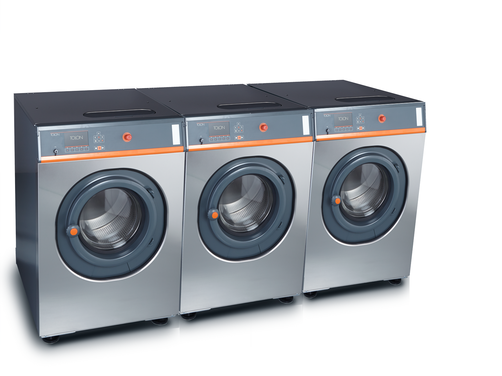

TWE series
Washer extractors

Compact design
Minimum footprint, maximum capacity
Advanced interface
Easy process management
Status light
Remeote awareness
Top-loading
detergent hopper
Easy access

Automatic latch
Safer to operate
Conical drum face
Easy and fast unloading
Top hood
Easy service acccess

Simple construction
Faster repairs
Minimum drum spacing
Fast heating, low water consumption

Galvanized chasis
Long life

Sealed bearings
No maintenance, easy replacement
Ceramic-coated shaft
Zero abrasion on gaskets
Drum shackles
Easy repairs

Dosing unit
Ready for automation